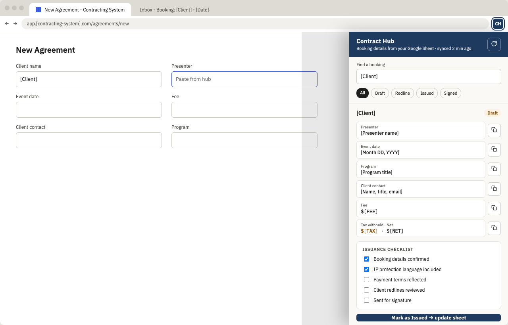
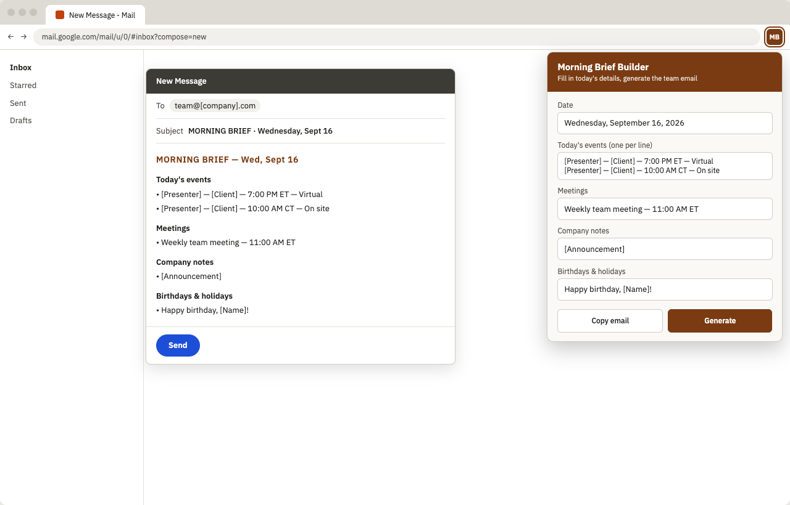

Case study: internal tooling at a speaker booking agency, 2025 to 2026
Two Chrome extensions that took the retyping out of my day
As the operations coordinator for two brands under one agency, I issued contracts and sent the daily team email. Both jobs involved moving the same information from one place to another by hand. I built two small Chrome extensions, backed by Google Sheets and Apps Script, so the information moved itself and I only had to check it.
The situation
Booking details arrived by email from the sales lead: client, presenter, date, program, contact, fee. My job was to turn each one into a contract in the agency's contracting system, track it through redlines to signature, and keep the shared Google Sheets current for both brands. The daily team email had the same shape every morning, with the day's events, meetings, company notes, and birthdays filled in.
Neither task was hard. Both were repetitive, and the contract one was the kind of repetitive where a wrong fee or a mistyped date ends up in a signed agreement.
What was going wrong
Issuing a contract meant reading a field in the email, switching tabs, typing it into the system, switching back, and repeating for every field, with the two brands' data living in separate sheets. Each switch was a chance to transpose a number or grab the line above. The time cost was modest. The error risk was the real cost, and so was the tedium of doing it several times a day.
The morning email was a smaller version of the same thing: a fixed structure re-assembled by hand, with formatting that had to be redone each time.
What I built
Contract Hub, a side panel
- Email in, row out An Apps Script watches for booking emails, parses the labeled fields, and writes each booking as a row in a Bookings sheet with a status column.
- Sheet to side panel The same script is deployed as a Web App that returns the bookings as JSON. A Chrome side panel reads it, so the booking sits beside the contracting system in the same window instead of in another tab.
- One click per field Every field in the panel has a copy button. Fee, tax withheld, and net are computed once in the panel so the financial lines are never worked out by hand.
- A checklist and a write-back An issuance checklist (details confirmed, IP language included, payment terms reflected, redlines reviewed, sent for signature) lives with each booking, and marking a contract as issued posts the status back to the sheet through the Web App.

Morning Brief Builder, a popup
A form with the variable pieces of the daily email: date, events, meetings, company notes, birthdays and holidays. Generate produces the formatted email and copies it as rich text, ready to paste into a new message. Inputs persist between opens until cleared, so a note added at 7:50 is still there at 8:00.

Results
- Booking details went from email to contract without being retyped, which removed the class of errors that comes from manual entry.
- The fee, tax, and net lines were computed once, in one place, instead of by hand per contract.
- Contract status lived in the sheet and updated from where the work happened, so tracking stopped being a separate task.
- The morning email became a two-minute form instead of a composed message, with consistent formatting every day.
- The time saved was real but small. The reason to build them was accuracy, and to make a task I did every day less tedious. That was worth the effort on its own.
What I would do differently
The email parser depends on the sales lead writing fields in a consistent way, so a change in how a booking email was worded could quietly produce an empty row. If I rebuilt it, I would validate the parsed row against required fields and flag anything missing in the side panel, rather than trusting the email format to hold.
I would also involve the rest of the team earlier. These were built for my own workflow, which made them fast to ship and easy to change, but it also meant they stayed mine. A tool that one person uses is a convenience. A tool a team uses is a process.
Tools used
- Chrome Extensions (Manifest V3, Side Panel API)
- JavaScript, HTML, CSS
- Google Apps Script (Gmail, Sheets, Web App)
- Google Sheets